The Story
Of Dolly
Food Addiction Leading to Overweight
A Novel Based On A True Story
Endless Gratitude To My friend Psychologist Magdalena Mantarova
For Her Contribution In
Supporting This Novel With Scientific Proof
Based On The "Hunger Fix" by Mariska Van Aalst And Pamela Peeke
When was the last time you turned to food in order to feel better?
Have you ever tried to surpress your emotions with binge eating?
Did you feel relief or guilt after that?
Or both?
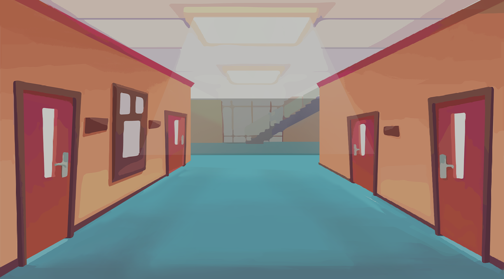
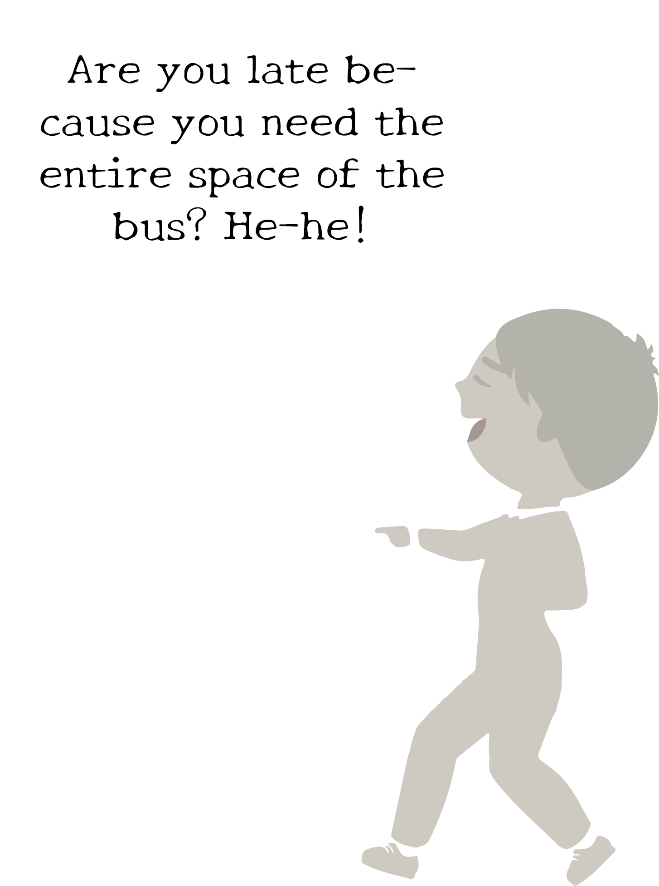
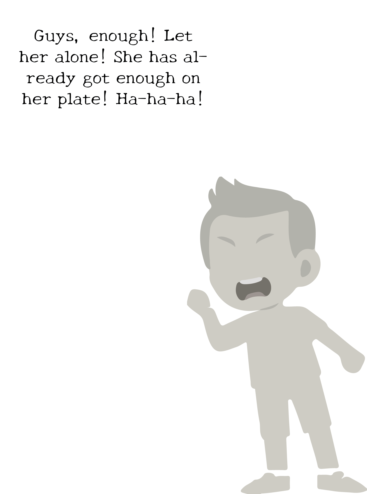
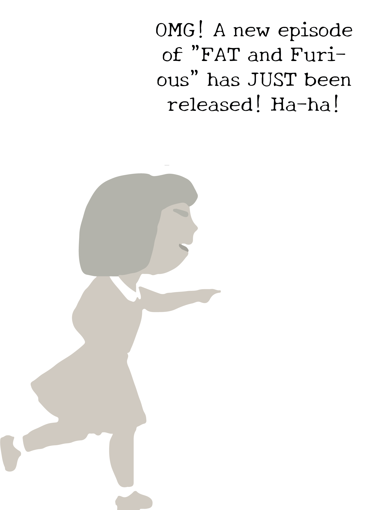
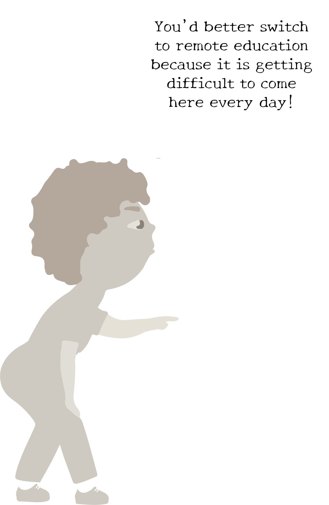
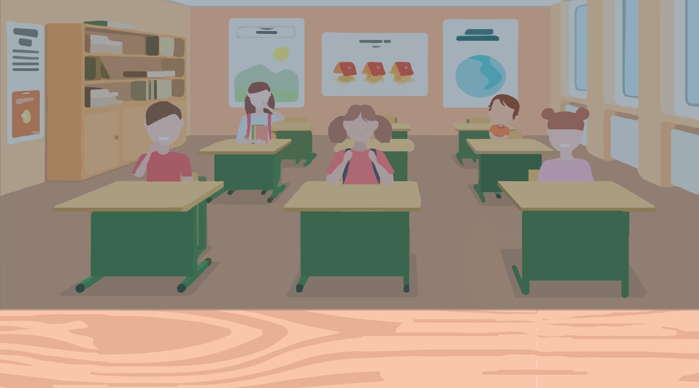
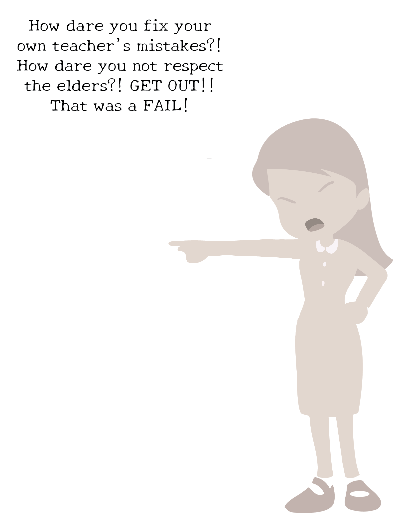
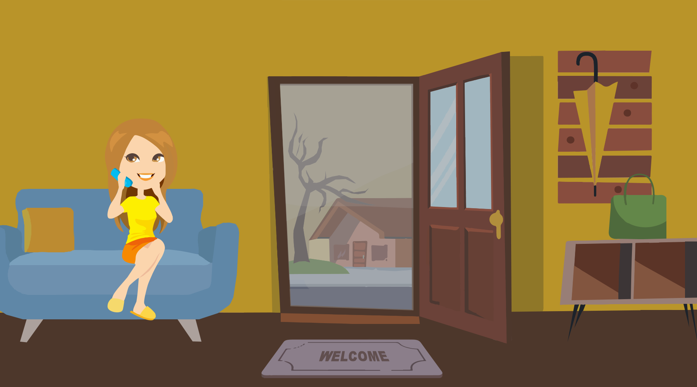
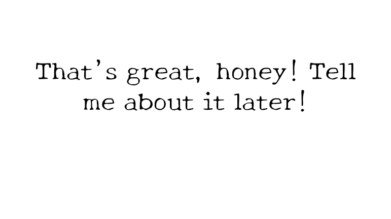
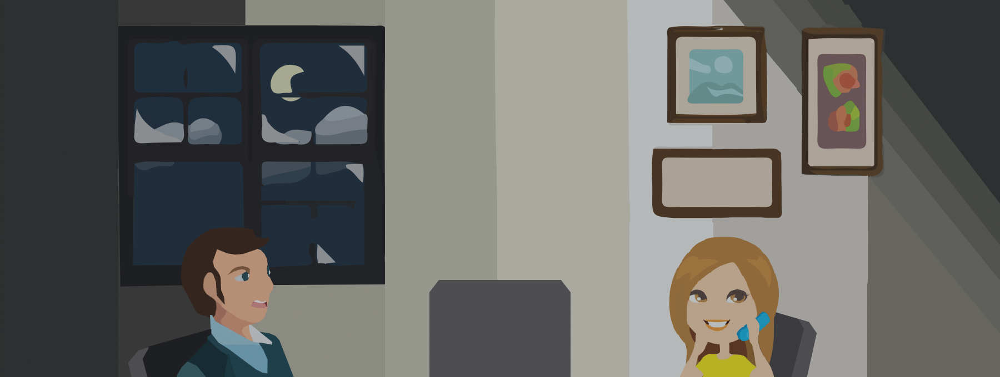
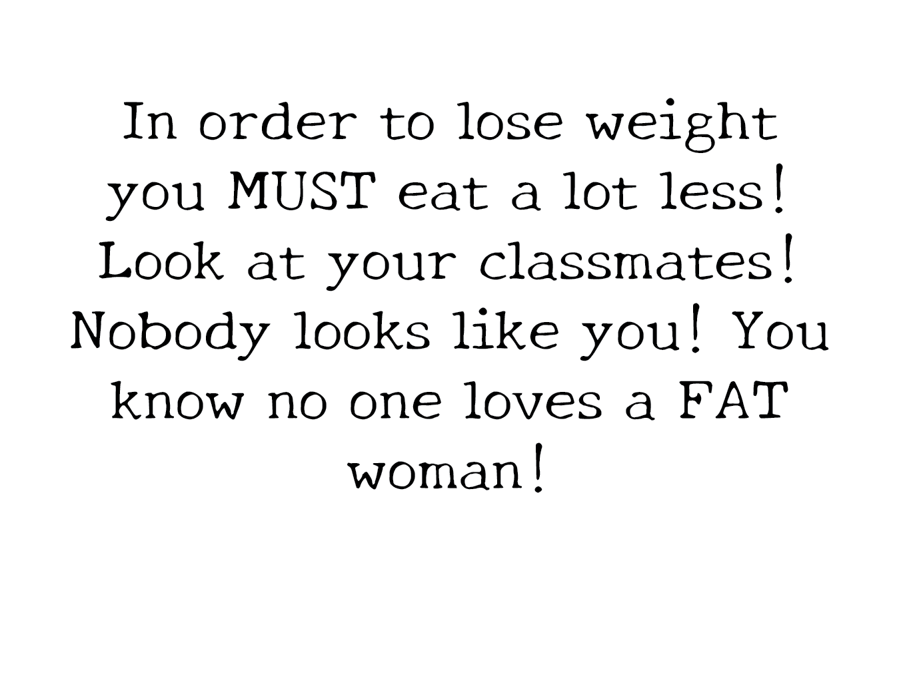
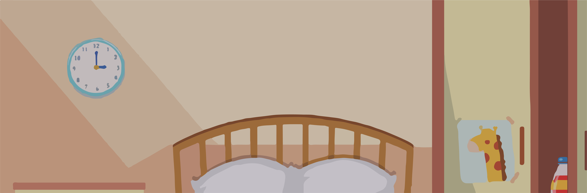
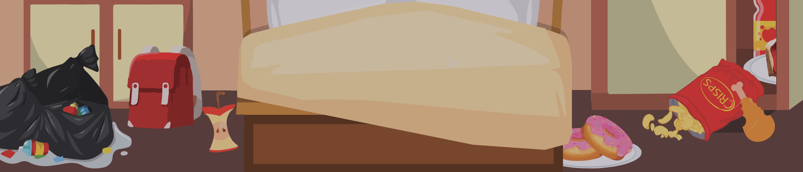
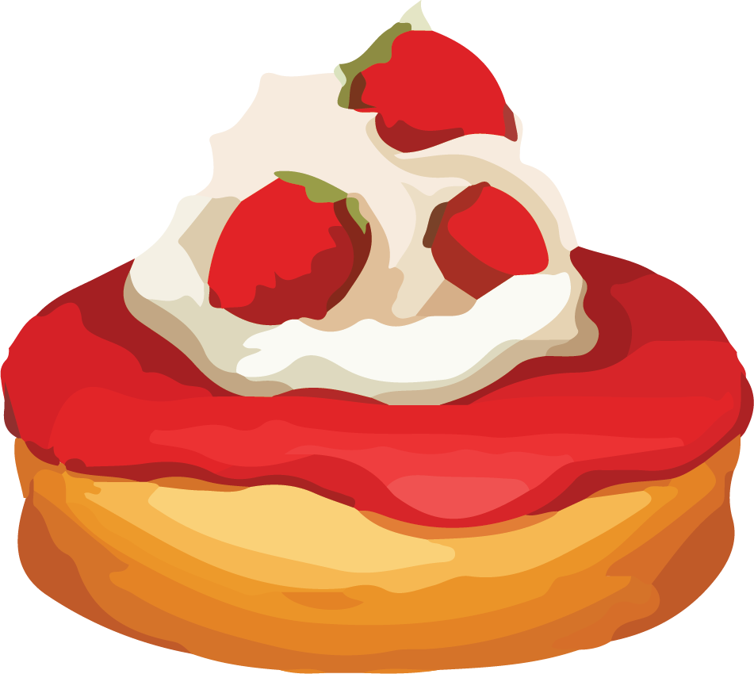
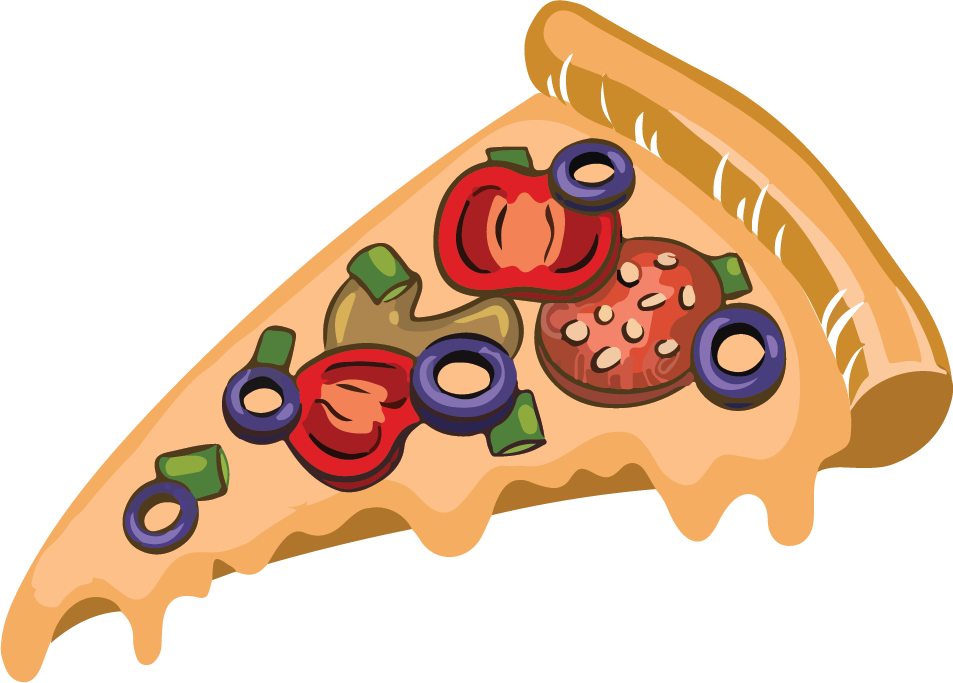
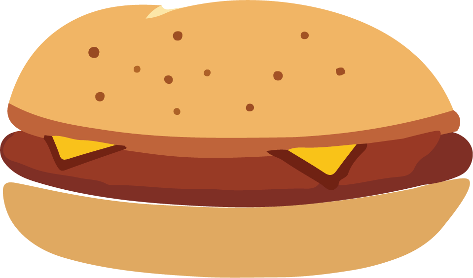
80 kg